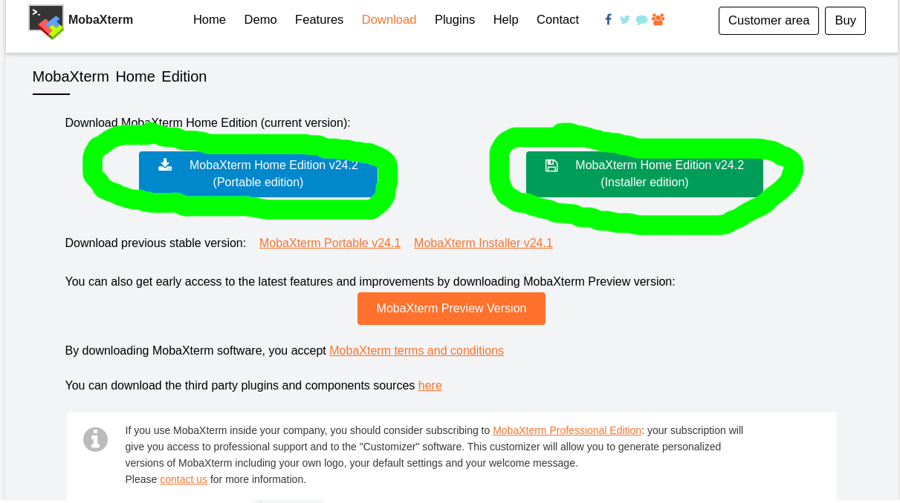

本页仅提供MobaXterm的下载方式
MobaXterm是一款远程工具，分为免费版和付费版（对于个人用户来说免费版已经够用了。）
这里是官网下载选择：
https://mobaxterm.mobatek.net/download-home-edition.html
说明
MobaXterm,进入后会有两个下载按钮，带“Protable Edition”字样的是便携版，适合只使用一小段时间的用户，解压即用。
带有“Installer edition”字样的是安装版，顾名思义就是需要安装才能使用的版本。 
下载
这里提供的直接下载链接可能不是最新的
便携版（解压直用）
安装版（需安装使用）
网盘的（下载慢、下载不了的话用）